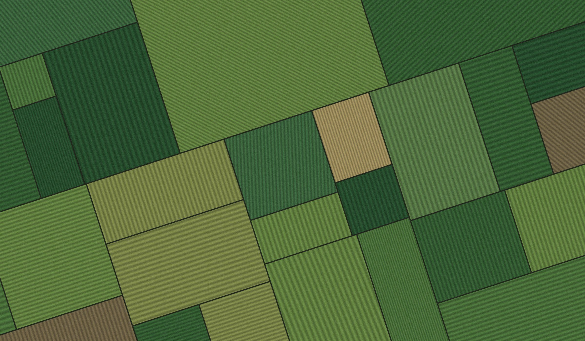
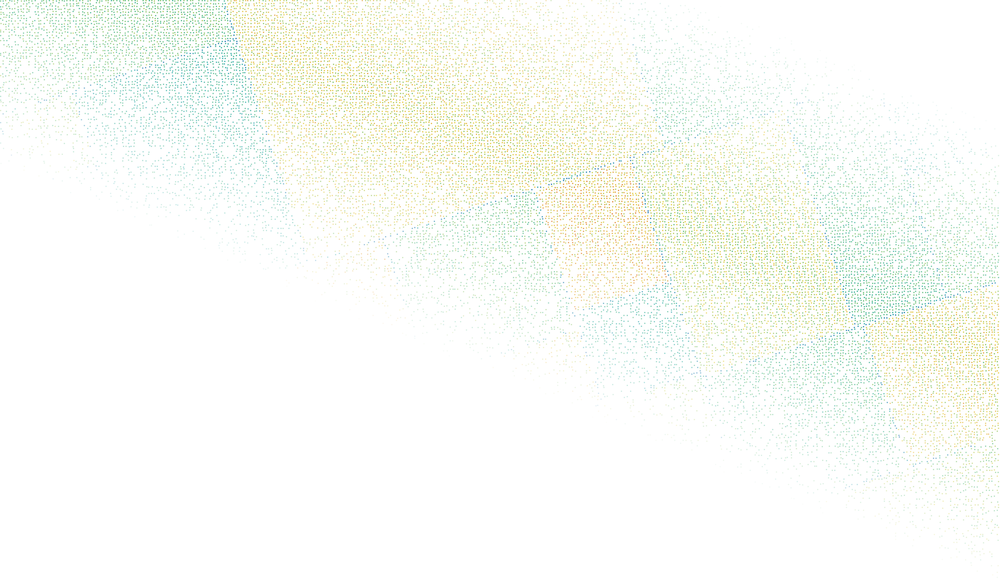
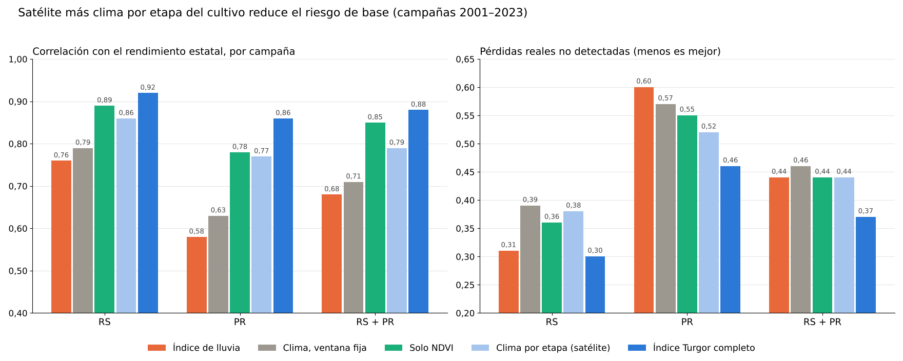
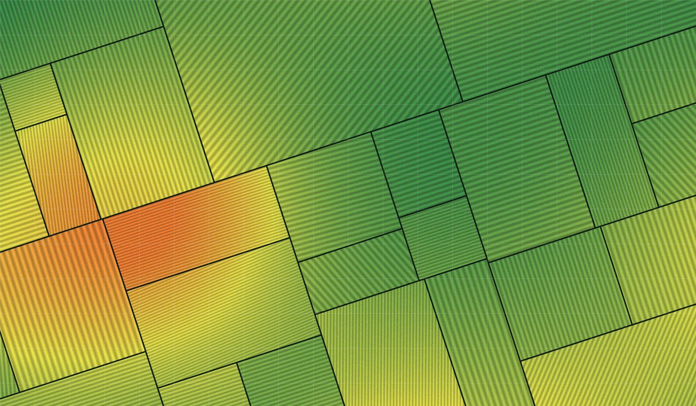
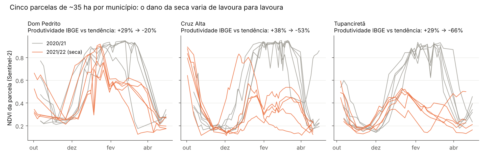

Satélite
MODIS · Sentinel-2
Lee el calendario de cada lote
- 1Emergencia
- 2Floración
- 3Llenado de granos
Las fechas salen de la curva NDVI de cada campaña, no de un calendario fijo.


En 2021/22, el rendimiento de la soja en Rio Grande do Sul cayó un 43% por debajo de la tendencia. Quienes financiaron el cultivo solo se enteraron al cosechar.
Mientras tanto, el seguro agrícola subvencionado pasó de 14 millones de hectáreas aseguradas en 2021 a 3,2 millones en 2025. El riesgo quedó en manos de cooperativas, revendedores de insumos y bancos.
Las fechas salen de la curva NDVI de cada campaña, no de un calendario fijo.
El calor con agua disponible pesa poco. El calor en sequía pesa mucho.
Puntaje de riesgo y pérdida estimada, por municipio y por lote.
Panel web o API · sin sensores · sin visitas al campo| Campañas 2001–2023 | Índice de lluvia | Turgor |
|---|---|---|
| Correlación con el rendimiento estatal | 0,68 | 0,88 |
| Detección de pérdidas superiores al 10% por municipio (AUC) | 0,78 | 0,83 |
| Pérdidas reales no detectadas, como disparador de seguro (RS + PR) | 44% | 37% |
| Pérdidas reales no detectadas en Paraná | 60% | 46% |

Arrastre la línea.


Puntajes y alertas durante la campaña para quienes aprueban créditos de insumos y operaciones de canje. La pérdida aparece a tiempo para renegociar o provisionar.
Quienes financian al productor ven el riesgo de cada lote de la cartera, no solo el promedio del municipio.
El índice como disparador de seguro paramétrico. Paga cuando la soja pierde rendimiento, no solo cuando llueve poco.
Estudios de cartera por municipio y por lote, con la misma medida usada en la campaña en curso.
Límites de los lotes e historial de cosecha. Turgor ejecuta el índice campaña tras campaña y lo compara con lo cosechado.
Uno de tecnología, para datos y satélite. Uno de negocios, con trayectoria en crédito o seguro rural.
Janaina Fortirer
Fundadora y responsable científica
Ecofisióloga vegetal, doctoranda en la Universidad de São Paulo e investigadora visitante en la Universidad de Illinois en Urbana-Champaign. Investiga cómo responde la soja al CO2 elevado, la sequía y el calentamiento, desde el intercambio gaseoso hasta la transcriptómica.